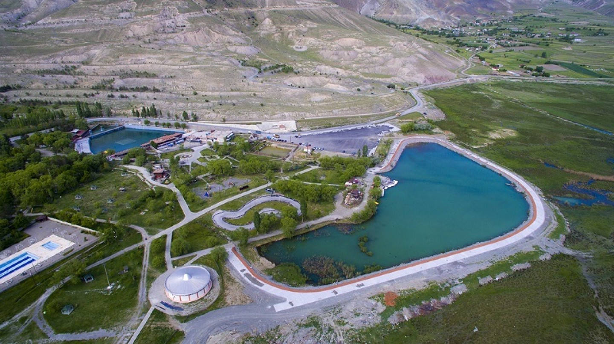
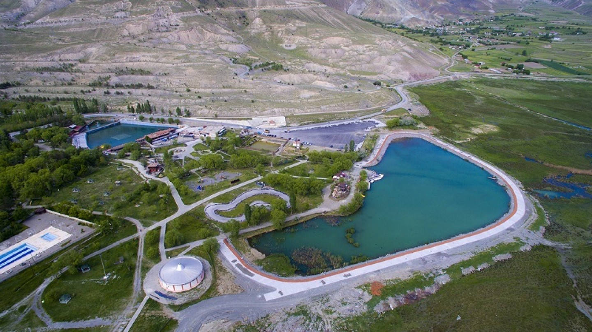
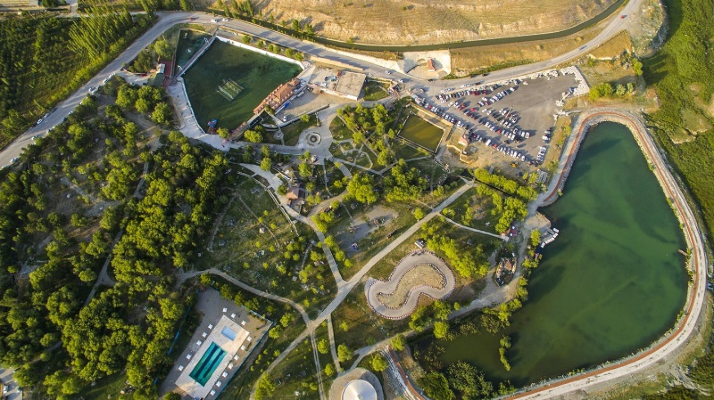
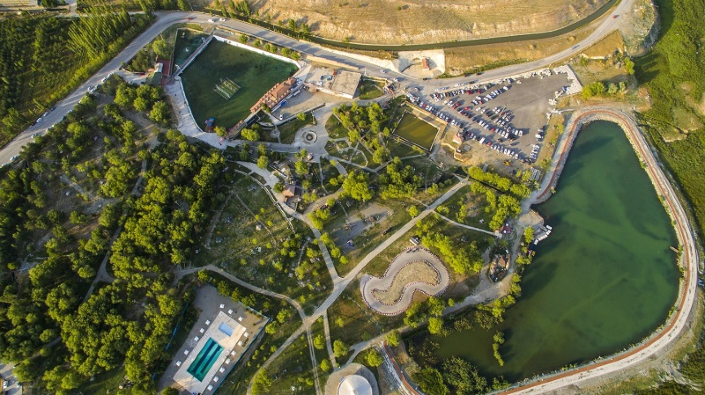

Ekşisu Mesire Alanı Erzincan şehir merkezine 11 kilometre uzaklıkta, eski Erzincan-Erzurum karayolu üzerinde bulunmaktadır Ekşisu, doğal maden suyunun çıktığı, geniş park alanlarının bulunduğu, yerli ve yabancı turistlerin en çok tercih ettiği, Erzincan'ın en gözde mesire alanlarından biridir. Burada yer alan çeşmelerden akan ve Böğert adıyla anılan maden suyu, çeşitli hastalıklara iyi gelmekte; anemi, karaciğer, mide, bağırsak ve safra yolu hastalıklarının tedavisinde kullanılmaktadır.
 

 
